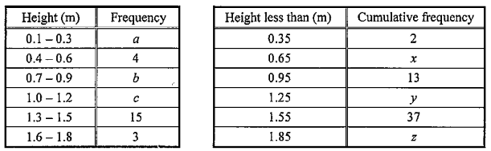

統計學 · 頻數分佈表

$$a=2$$
「小於 $0.65$」覆蓋首兩組，故 $x=2+4=6$。
$$a+4+b=13\ \Rightarrow\ 2+4+b=13\ \Rightarrow\ b=7$$
「小於 $1.55$」覆蓋首五組：$13+c+15=37$，故 $c=9$。
「小於 $1.25$」覆蓋首四組：$y=13+c=13+9=22$。
$$z=37+3=40$$
把頻數欄相加：$2+4+7+9+15+3=40$，與 $z$ 一致。
「小於 $1.25$ m 但不小於 $0.65$ m」即 $0.65\le h \lt 1.25$，對應 $0.4$–$0.6$、$0.7$–$0.9$、$1.0$–$1.2$ 三組。
$$\text{概率}=\frac{y-x}{z}=\frac{22-6}{40}=\frac{2}{5}$$